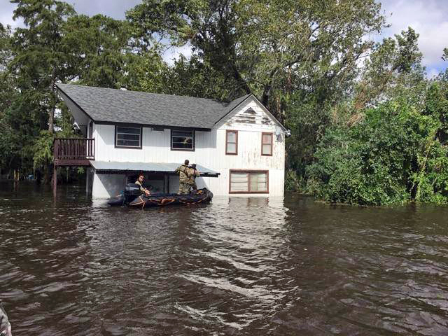
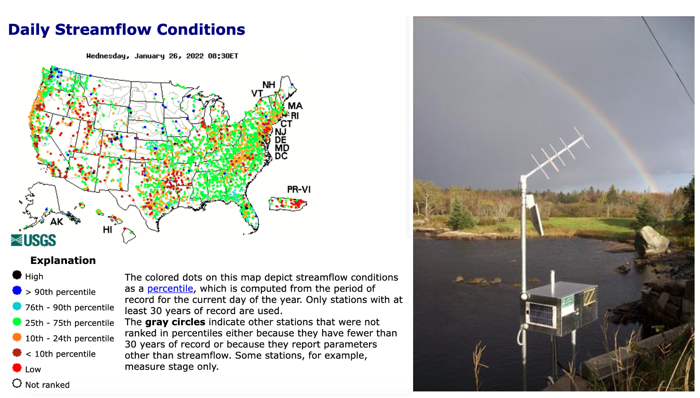
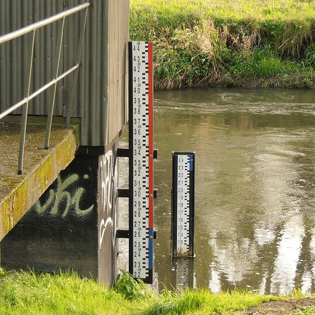
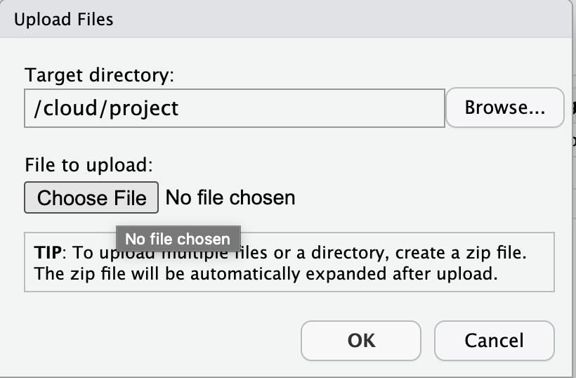
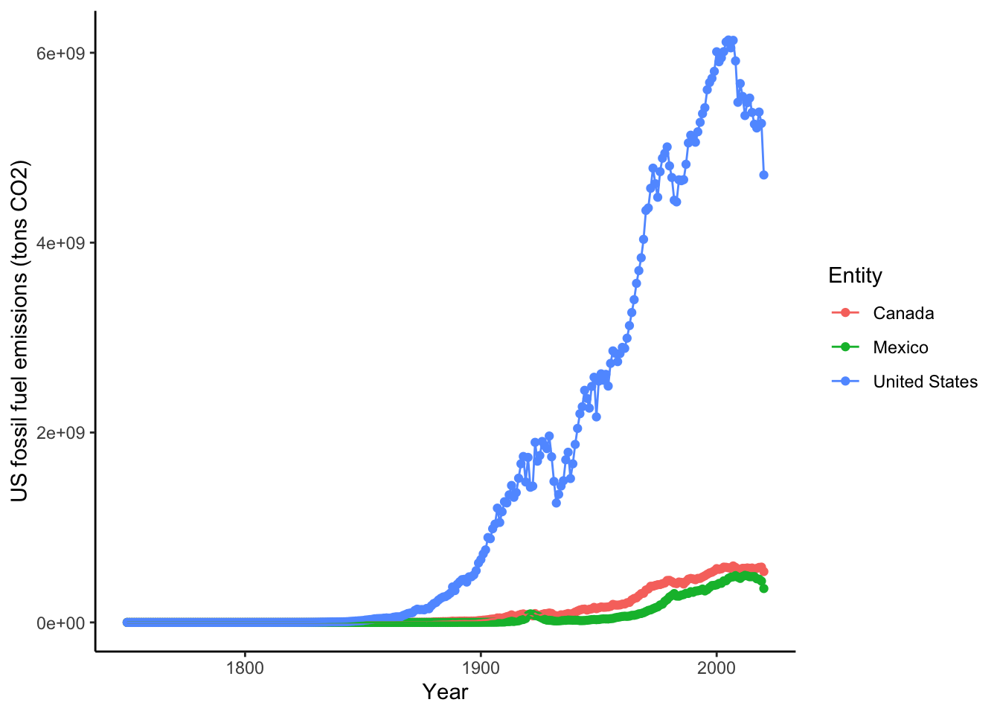

Chapter 3 The data deluge: data wrangling in R
by Heather Kropp for ENVST 325: Introduction to Environmental Data Science Hamilton College
3.1 Learning objectives
Learn about data for flood monitoring and prediction
Read data into R
Subset data that meets specific criteria
Aggregate and sumarize data
3.3 The problem:
3.3.1 Flooding and natural disasters
Increases in flooding are expected under climate change as precipitation regimes and extreme weather events increase. Hurricanes are major source of flooding in the eastern United States throughout the mid-late summer and early fall. Globally, tropical cyclone activity is increasing, and continued increases in sea level and temperature are expected to bring more severe hurricanes. In recent years, major hurricanes like Katrina, Ida, and Irma have tragically resulted in the loss of human life, billions of dollars of damage, and drastic changes to ecosystems and infrastructure.

Source: Flooding from Hurricane Irma, Florida National Gaurd, CC2Many damages are associated with flooding that comes with high intensity rainfall and storm surges. Tracking patterns in historical flooding around hurricanes can help enable predictions for future scenarios and evaluate impacts. Real time tracking of stream and river levels is a critical part of the National Weather Service flood predictions and warning system. In this exercise, you will get more familiar with the data that helps track flooding. You will look at data in the days around Hurricane Irma in 2017. Hurricane Irma made landfall over Florida on September 10 and is estimated to have caused $50 billion dollars of damage.

3.3.2 The data: flood stage & stream guage height
The United States Geological Survey maintains a network of stream measurements that measure the flow and height for rivers and other surface water features to monitor for flood conditions. These sensors monitor conditions in 15 minute increments and data is transmitted back to the USGS for relatively real time monitoring of conditions.

A map of real time stream flow data and (left) example of a sensor set up. Source: USGS water data
The stream stage is the height of the water surface in a stream, river, body of water. The reference point is commonly referred to as the datum. There are many automated ways to measure stream stage. An example of an analog approach is shown below. The USGS default is to measure stream stage in feet.

Height Gauge. Source: Grzegorz W. Tężycki CC3
The United States Geological Survey measures stream stage and discharge in 15 minute increments at thousands of locations around the country. More information from the USGS water school. Discharge can be an key part of modeling flooding and understanding issues associated with water cycling in a watershed. The default USGS measurement is in cubic feet per second.

The diagram above demonstrates the relationship between discharge and height. While discharge is a key variable in watershed modeling and hydrology, stream stage is often more intuitive for non-hydrologists to understand and can be used for decisions around recreational activities. The National Weather Services uses stream stage to characterize flood stage. Each station has designated heights that mark a different flooding level. The flooding heights depend on the depth of the body of water and the characteristics of the watershed.

You can find definitions for category here: https://www.weather.gov/aprfc/terminology.
3.4 The approach: packages in R
In chapter 1, functions like c and data.frame were used to create new data objects. These functions were a part of what is called base R. The functions that are available when you install R.
Packages add additional functions that are not located in the base functions in R. R is an open-source ecosystem that gets contributions from a wide array of software developers. There are more than 21,000 packages currently available on CRAN that expand the functions available in R. These packages help reduce the volume of code that people need to different operations that have a broader relevance for different applications. If you were to automatically have all of these packages and their functions loaded in R, it would take up space and too many functions would have the same name. I tend to take the philosophy that it is good practice to load only the packages needed to run the code in your script in an R session to keep track the different functions active in your session. Some packages may not be widely supported and become obsolete if developers do not actively update them.
For data wrangling, functions from the dplyr package are useful. dplyr has functions for handling data and some functions are more efficient at working with large data frames than base R. The dplyr cheatsheet gives an overview of the different functions in the package.
Dates can be a tricky data format to work in. The package lubridate helps ease formatting and extracting information from dates. The lubridate cheatsheet gives an overview of the different functions in the package.
3.4.1 Installing packages
The first step in using a package, is to install it to your local computer using the install.packages function. You only need to do run this once for a project in RStudio Cloud. A prompt will ask what mirror to download from. I typically choose any mirror in the United States.
3.5 The approach: data wrangling
Data wrangling is one of the most fundamental aspects to data science. Rarely will your data be perfectly formatted and ready for visualization, statistics, or modeling. You will will often need to merge different types of data, subset data to a narrower focus, and aggregate observations using functions like the average, min, or max. In this section, you will learn the basics of data wrangling in R to look at patterns in flooding.
Once you start a new project from GitHub, you can upload data using the upload button. Download the Activity 2 zip file from the tutorials folder. You can upload the zip folder directly into RStudio Cloud from the upload button:

Sources/Usage: NWS3.5.1 Reading in data
You will read in data using the read.csv function. A csv file (comma separated values) contains the text version of an excel spreadsheet where the values for each cell are included in the file and the designation of a new cell starts with a comma. You can always resave an .xlsx file as a .csv. You can save any excel or sheets file as a .csv file when you click save as. Let’s read in a file I’ve already formatted for you.
There is one critical argument in read.csv, the file path including the name of the file. A file path tells R where to find the file within the computer file system. You will be able to see the file in the Files tab. The file system for RStudio cloud will always start with Cloud.
The stream gauge csv contains the 15 minute observations of stream stage before and after Irma. The column gheight.ft has the stream stage in feet, datetime has the date and time of collection, siteID is an unique numerical identifier USGS uses, and agency contains the administrative information for the management of the sensors. There are 4 total sample locations from Florida in the streamH and siteInfo data.
agency siteID datetime gheight.ft
1 USGS 2256500 2017-09-08 00:00 5.68
2 USGS 2256500 2017-09-08 00:15 5.68
3 USGS 2256500 2017-09-08 00:30 5.68
4 USGS 2256500 2017-09-08 00:45 5.68
5 USGS 2256500 2017-09-08 01:00 5.69
6 USGS 2256500 2017-09-08 01:15 5.69The site_info table contains a the siteID, geographical name (names), and the National Weather Service information for flood stages (action.ft, flood.ft, moderate.ft, major.ft).
agency siteID datetime gheight.ft
1 USGS 2256500 2017-09-08 00:00 5.68
2 USGS 2256500 2017-09-08 00:15 5.68
3 USGS 2256500 2017-09-08 00:30 5.68
4 USGS 2256500 2017-09-08 00:45 5.68
5 USGS 2256500 2017-09-08 01:00 5.69
6 USGS 2256500 2017-09-08 01:15 5.69In a data frame, you can always refer to a single column using the $ notation for data.frame$column.name
[1] "FISHEATING CREEK AT PALMDALE"
[2] "PEACE RIVER AT US 17 AT ZOLFO SPRINGS"
[3] "SANTA FE RIVER NEAR FORT WHITE"
[4] " WITHLACOOCHEE RIVER AT US 301 AT TRILBY"3.5.2 Parsing date/time
Parsing a date in R means that you are specifying the date and telling R how to structure it into a standard format. Date data can be formatted in many ways (think Jan-21-22 and 01/21/22 are two different ways to write the same date). In lubridate, parsing dates is easy a function that is named based on the order of your date formatting where y=year, m= month, d = day, h = hour, m=minute, s. The function parses the date into a standardized format for R using the specified date and time elements that are in your date data. If both are in the same column then you separate the date and time letters with an underscore. You can set the timezone with the argument tz
exampleDate <- c("2021-01-10 05:23:30")
#parse date with year, month, day hour:minute:second
ymd_hms(exampleDate)[1] "2021-01-10 05:23:30 UTC"#parse date with timezone so that it is always in NY time
#will account for daylight savings. Time local to NY
ymd_hms(exampleDate, tz="America/New_York")[1] "2021-01-10 05:23:30 EST"#eastern standard time (note this doesn't work during daylight savings)
ymd_hms(exampleDate, tz="EST")[1] "2021-01-10 05:23:30 EST"You can reformat the date in a column:
I used New York because that will include both eastern standard and eastern daylight savings time. Florida and its cities don’t have a pre-defined time zone in R.

3.5.3 Extracting information from dates
There are many functions in lubridate to extract information for dates. You can use the year function to extract just the year from the date. The only argument is the vector of dates:
You can check if the year in a date is is a leap year with leap_year:
You can get the day of year (Jan 1 is day 1 and December 31 on a non-leap year is day 365) with yday:
You can get the decimal date with decimal_day
There are too many functions to go through here. If you have both date and time, there are functions like hour and minute that allow to extract time information.
Decimal date and day of year might be useful. You can save it into the streamH using the $ notation.
3.6 Basic subsetting
Subsetting data is a common technique in analysis. Subsetting involves isolating your datas to focus on a narrower characteristic or set of conditions. For example, you might want to look at river stage height at a single location or point in time.
The use of relational operators allows you to identify and reference data that meets a condition such as (height LESS THAN 9 feet). Logical operators allow you to combine relational statements such as (height < 8 feet AND height > 6 feet ).
| Operator | Interpretation | Type |
|---|---|---|
== |
equal to | relational |
!= |
not equal to | relational |
> |
more than (not including) | relational |
>= |
more than or equal to | relational |
< |
less than (not including) | relational |
<= |
less than or equal to | relational |
& |
and | logical |
| |
or | logical |
You can place these statements in [] (remember tutorial 1) in a vector or the row/columns of a data frame. For example, let’s make a new data frame that just focuses on Peace River (ID = 2295637). Since a data frame is two dimensions the bracket notation must include both notations [rows,columns]:
The statement above indicates that only rows where siteID IS EQUAL TO 2295637 will be included all columns will be included (empty slote comma indicates include everything).
3.6.1 Basic plotting
Visualizing data can be a helpful helpful for characterizing, understanding, and checking your data. We will learn how to make more sophisticated visualizations in the next tutorial using a package called ggplot, but a basic understanding of base R plotting is also helpful. The plot function will make a basic scatter plot for continuous data and a box plot for a categorical x axis. There are many arguments in the plot function. The first two arguements are the x axis and y axis data. Arguments like type ("b" means points and lines, "l" means just lines, and "p means just points) and pch (numbers for different shapes) change the characteristics of the graph. ‘xlab’ and ‘ylab’ change the labels on the axes. Let’s look at a plot of the Peace river stage height for each date:
#plot date vs height with both lines and filled in points
plot(peaceH$dateF, peaceH$gheight.ft, type="b", pch=19, xlab="Date",
ylab = "Stage height (ft)")
You can see that the river level drastically increased on September 11 and took a while to decline. It might be helpful to bring in the NWS flood categories to understand the scale of the flooding.
3.6.2 Joining data tables with a common feature
You want to understand if Peace River actually flooded during the hurricane. The siteInfo table contains that information. There are thousands of observations for each stream gauge measurement in streamH, but only one observation for each site in siteInfo. Joining the tables together will match the tables using a common feature in each table. In this case it is the siteID column that gives the unique identifying number for each stream gauge station. Using an unique numerical identifier is a really common feature in data organization.
'data.frame': 8681 obs. of 7 variables:
$ agency : chr "USGS" "USGS" "USGS" "USGS" ...
$ siteID : int 2256500 2256500 2256500 2256500 2256500 2256500 2256500 2256500 2256500 2256500 ...
$ datetime : chr "2017-09-08 00:00" "2017-09-08 00:15" "2017-09-08 00:30" "2017-09-08 00:45" ...
$ gheight.ft: num 5.68 5.68 5.68 5.68 5.69 5.69 5.69 5.69 5.7 5.7 ...
$ dateF : POSIXct, format: "2017-09-08 00:00:00" "2017-09-08 00:15:00" ...
$ DD : num 2018 2018 2018 2018 2018 ...
$ doy : num 251 251 251 251 251 251 251 251 251 251 ... siteID names action.ft flood.ft
1 2256500 FISHEATING CREEK AT PALMDALE 5.0 7
2 2295637 PEACE RIVER AT US 17 AT ZOLFO SPRINGS 9.0 11
3 2322500 SANTA FE RIVER NEAR FORT WHITE 22.0 23
4 2312000 WITHLACOOCHEE RIVER AT US 301 AT TRILBY 10.5 12
moderate.ft major.ft
1 8.0 9.0
2 14.0 16.0
3 25.0 29.0
4 14.2 16.5It would be helpful to have the flood category alongside the actual measurements. You could look at what flood category an individual measurement falls under. In joining two tables, you designate one table as the left table and one table as the right table. A join combines the columns in the left table with the right table to create a new table. The rows are matched between tables using a common identifier. Let’s do what is called a full join. This will keep information from all tables. Any observations that do not have a match between tables get a NA (missing data) designation.
# join site info and stream heights into a new data frame floods
floods <- full_join(streamH, # left table
siteInfo, # right table
by="siteID") # common identifier
head(floods) agency siteID datetime gheight.ft dateF DD doy
1 USGS 2256500 2017-09-08 00:00 5.68 2017-09-08 00:00:00 2017.685 251
2 USGS 2256500 2017-09-08 00:15 5.68 2017-09-08 00:15:00 2017.685 251
3 USGS 2256500 2017-09-08 00:30 5.68 2017-09-08 00:30:00 2017.685 251
4 USGS 2256500 2017-09-08 00:45 5.68 2017-09-08 00:45:00 2017.685 251
5 USGS 2256500 2017-09-08 01:00 5.69 2017-09-08 01:00:00 2017.685 251
6 USGS 2256500 2017-09-08 01:15 5.69 2017-09-08 01:15:00 2017.685 251
names action.ft flood.ft moderate.ft major.ft
1 FISHEATING CREEK AT PALMDALE 5 7 8 9
2 FISHEATING CREEK AT PALMDALE 5 7 8 9
3 FISHEATING CREEK AT PALMDALE 5 7 8 9
4 FISHEATING CREEK AT PALMDALE 5 7 8 9
5 FISHEATING CREEK AT PALMDALE 5 7 8 9
6 FISHEATING CREEK AT PALMDALE 5 7 8 9You can see there are now columns from both tables. The observations from siteInfo were replicated for each observation in streamH with the matching id. There are other types of joins like left_join that keeps the structure of the left table and does not add new observations if there is an observation present in the right table but not the left. An inner_join only keeps observations present in each table.
3.6.3 Aggregating data & chaining functions
A common action in data analysis is to summarize data observations across groups or categories. This means dropping down from a large number of observations to a smaller number using a summary statistic. You are familiar with a range of summary statistics including the average (mean in R), standard deviation (sd in R), and the count (length or n in R). It is rare that you will want to take an average for an entire data set. For example running the following code to average the entire height column doesn’t provide a lot of useful information.
[1] 11.62245In this case, that would not mean much since there is a random assortment of rivers with different baseline heights for each flood category. Instead it makes sense to look at each river individually.
You can use the group_by and summarise function from dplyr to calculate the mean over a variable containing different grouping factors. These functions will be chained together in what is called a pipe.
In tidyverse packages like dplyr, a pipe looks like this: %>%. Each function can be chained on its own line. Note that brand new versions of R offer a pipe in base R that looks a little different. It is too confusing to switch between the two. We will focus on the tidyverse version here. Pipes also use a specific format that starts by naming the new object that will be the final output from the chain of functions.
height.ave <- floods %>% # data frame with pipe
group_by(names) %>% # group data frame by unique names
summarise(mean.height = mean(gheight.ft)) # next summarize using mean
height.ave# A tibble: 4 × 2
names mean.height
<chr> <dbl>
1 " WITHLACOOCHEE RIVER AT US 301 AT TRILBY" 15.5
2 "FISHEATING CREEK AT PALMDALE" 7.53
3 "PEACE RIVER AT US 17 AT ZOLFO SPRINGS" 17.1
4 "SANTA FE RIVER NEAR FORT WHITE" 6.76Tidyverse generates a variant of data frames called a tibble. The format is very similar to a data frame, but there are additional labels for the type of data and any group designations in the data.
You will notice that you get an message about grouping. This is a friendly warning that an argument made a default assumption about keeping the structure of groups in the output. We won’t work super closely with the groups in the output data so you can ignore it.
More than one column can be used to create groups and multiple columns of summaries can be generated within summarise. Let’s look at the average and maximum daily heights for each site:
height.day <- floods %>% # data frame with pipe
group_by(names, doy) %>% # group data frame by unique names and doy
summarise(mean.height = mean(gheight.ft), max.height = max(gheight.ft)) # next summarize using mean and max# A tibble: 10 × 4
# Groups: names [1]
names doy mean.height max.height
<chr> <dbl> <dbl> <dbl>
1 " WITHLACOOCHEE RIVER AT US 301 AT TRILBY" 251 10.0 10.1
2 " WITHLACOOCHEE RIVER AT US 301 AT TRILBY" 252 10.1 10.2
3 " WITHLACOOCHEE RIVER AT US 301 AT TRILBY" 253 10.3 11.0
4 " WITHLACOOCHEE RIVER AT US 301 AT TRILBY" 254 12.4 13.7
5 " WITHLACOOCHEE RIVER AT US 301 AT TRILBY" 255 14.3 14.7
6 " WITHLACOOCHEE RIVER AT US 301 AT TRILBY" 256 14.9 15.1
7 " WITHLACOOCHEE RIVER AT US 301 AT TRILBY" 257 15.3 15.5
8 " WITHLACOOCHEE RIVER AT US 301 AT TRILBY" 258 15.7 16.0
9 " WITHLACOOCHEE RIVER AT US 301 AT TRILBY" 259 16.3 16.6
10 " WITHLACOOCHEE RIVER AT US 301 AT TRILBY" 260 16.8 17.03.6.4 Filtering data
The filter function is very similar in operation to the bracket subset you learned above in base R. The benefit in filter is that it can also be linked to group_by.
Rather than thinking about average height, it may be helpful to characterize how long each gauge was in a certain flood category for each river. It is useful to subset the data frame so that you can characterize the time spent under that condition.
Let’s start by looking at the highest category of flooding, the major flooding category. This category is associated with extensive damage, travel interruptions, and mobilizes the national guard.
Let’s start by with the filter to isolate only observations at or above a major flooding category:
max.cat <- floods %>% #filter floods
group_by(names) %>% # group by name
filter(gheight.ft >= major.ft) #observations with height more than or equal to the major flood height# A tibble: 6 × 12
# Groups: names [1]
agency siteID datetime gheight.ft dateF DD doy names
<chr> <int> <chr> <dbl> <dttm> <dbl> <dbl> <chr>
1 USGS 2256500 2017-09-12 02… 9.02 2017-09-12 02:00:00 2018. 255 FISH…
2 USGS 2256500 2017-09-12 02… 9.05 2017-09-12 02:15:00 2018. 255 FISH…
3 USGS 2256500 2017-09-12 02… 9.07 2017-09-12 02:30:00 2018. 255 FISH…
4 USGS 2256500 2017-09-12 02… 9.09 2017-09-12 02:45:00 2018. 255 FISH…
5 USGS 2256500 2017-09-12 03… 9.12 2017-09-12 03:00:00 2018. 255 FISH…
6 USGS 2256500 2017-09-12 03… 9.15 2017-09-12 03:15:00 2018. 255 FISH…
# ℹ 4 more variables: action.ft <dbl>, flood.ft <int>, moderate.ft <dbl>,
# major.ft <dbl>A preview reveals a tibble that looks different from floods. However, it would be help to characterize how many of these observations were above the major flood stage. You can build on the filter function with summarise. The n function in dplyr will count the number of observations in the data frame. In this case, this is the 15 min intervals that exceeded major flooding.
max.cat <- floods %>%
group_by(names) %>%
filter(gheight.ft >= major.ft) %>%
summarise(n.major = n()) # count number of observations for each name# A tibble: 3 × 2
names n.major
<chr> <int>
1 " WITHLACOOCHEE RIVER AT US 301 AT TRILBY" 981
2 "FISHEATING CREEK AT PALMDALE" 357
3 "PEACE RIVER AT US 17 AT ZOLFO SPRINGS" 1147That is a lot of observations! One site is not present and never got to a major flood category. A fifteen minute period is tough to interpret. Let’s convert those 15 minute periods to days. R allows you to put functions or calculations in another function. It can make for messy coding if you have a lot of functions, but in this case it reduces the amount of coding. You have to first multiply each observation period by 15 to represent it in minutes and then convert minutes to days.
max.cat <- floods %>%
group_by(names) %>%
filter(gheight.ft >= major.ft) %>%
summarise(n.major = ((n()*15)/60)/24) # find out how many days the 15 minute periods add up to# A tibble: 3 × 2
names n.major
<chr> <dbl>
1 " WITHLACOOCHEE RIVER AT US 301 AT TRILBY" 10.2
2 "FISHEATING CREEK AT PALMDALE" 3.72
3 "PEACE RIVER AT US 17 AT ZOLFO SPRINGS" 11.9 There is clearly a lot of variation in the duration of flooding and severity of flooding in each of these four stations. In your homework, you will continue to explore characterizing this flood data through the summary and organization of the data. This is just an introduction to the many functions that are involved in data wrangling.
Data wrangling is a central part to data analysis and is often needed to calculate statistics or set up your data for a model or algorithm. It may be the starting point for your data analysis and it may even be the endgame if you simply need summary statistics or visualizations.